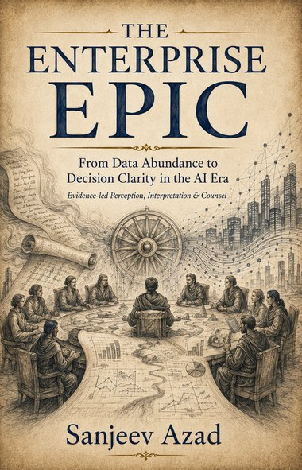

Parva I
The Kingdom of Data
- 1The Great Accumulation
- 2The Dashboard Delusion
A book by Sanjeev Azad
From Data Abundance to Decision Clarity in the AI Era
Your enterprise has more data than ever, and the big decisions are still hard. This book is about the distance between the two, and the disciplines that close it.

The idea
Enterprises have spent a decade building the means to collect, store and display data. Dashboards multiplied. Models improved. Yet in the room where a consequential decision is made, the same questions remain: what do we actually know, how sure should we be, and who answers for what happens next?
The gap is not purely technical. It sits between having information and deserving confidence in it. Closing it takes disciplines most organisations never formalise: noticing what matters, agreeing what it means, asking the right question, challenging the comfortable answer, and learning honestly from consequence.
The book builds those disciplines into one framework, Project EPIC, and follows a fictional company, Enterprise K-18, as it puts them to work, chapter by chapter, on a single difficult decision.
Project EPIC stands for Evidence-led Perception, Interpretation and Counsel.
An enterprise can know more
and understand less.
From Adhyaya 1
Most organisations invest heavily in the first two levels and assume the other three will follow on their own. They rarely do.
Project EPIC begins at the third level, where the question stops being whether data can be reached and becomes whether it can be understood, trusted and turned into a better decision.
Figure 1.1 · The climb from data-rich to intelligent
The framework
A note on the epic
The Mahabharata is one of the great epics of ancient India, remembered less for its war than for its questions: how rulers decide, who dares to tell them an unwelcome truth, and how every action returns as consequence. The book borrows a handful of its roles as an architecture for a modern problem. It does not retell the epic, no illustration depicts any deity, and no prior knowledge is needed.
Project EPIC connects eleven capabilities, and each borrows one memorable idea from a figure in the epic. Think of these as archetypes, not portraits.
| Figure | The idea it lends | Project EPIC capability | First appears |
|---|---|---|---|
| Sanjaya | The remote perceiver who tells leaders what is unfolding across the field. | Sanjaya Lens: perception and situation awareness | Adhyaya 4 |
| Divya Drishti | Knowing what data can and cannot honestly reveal. | Divya Drishti Engine: data answerability | Adhyaya 5 |
| Vyasa | Restoring context, relationships and enterprise memory. | Vyasa Graph | Adhyaya 6 |
| Arjuna | Disciplined inquiry: asking the right question before acting. | Arjuna Inquiry and the Question Graph | Adhyayas 7 and 8 |
| Sarathi | Guidance that advises without seizing the decision. | Sarathi Reasoner | Adhyaya 9 |
| Vidura | The courage to challenge the comfortable story. | Vidura Challenge | Adhyaya 10 |
| Dharma | Governing evidence and accountability across a decision's life. | Dharma Ledger and the Dharma Check | Adhyaya 12 |
| Vishvakarma | Designing the right representation for each question and audience. | Vishvakarma Studio | Adhyaya 13 |
| Bhima | Strength disciplined into bounded, accountable action. | Bhima Actions | Adhyaya 15 |
| Sabha | Coordinating many participants without dissolving responsibility. | Enterprise Sabha and EPIC Sabha | Adhyaya 16 |
| Karma | Observing outcomes and feeding them back into judgement. | Karma Chakra: the wheel of consequence | Adhyaya 17 |
Inside the book
The book is organised into nine parts, called Parvas, and eighteen chapters, called Adhyayas. It moves in one arc, from perceiving a situation to learning from its consequence, and each chapter can also be read on its own.
Parva I
Parva II
Parva III
Parva IV
Parva V
Parva VI
Parva VII
Parva VIII
Parva IX
Try the ideas
Free to use. Nothing you enter leaves your browser.
Nine situations, about three minutes. Find the level your organisation has actually reached, and exactly where the climb breaks.
In the book, each chapter closes in a workshop called the EPIC Sabha, and its canvas is the worksheet. Three are free to download; readers can ask for all eighteen.
Get the book
Available from Notion Press and Amazon. On a computer, scan a code to open the store on your phone.